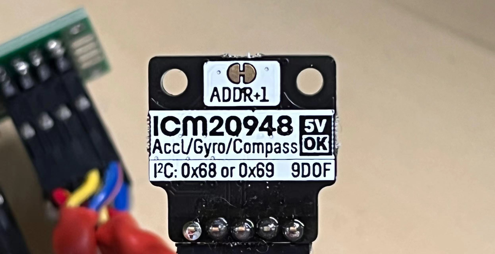
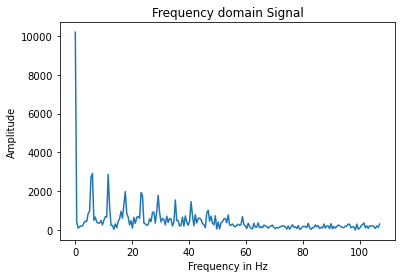

WARNING: This writeup is long because the lab is long... Please be aware...
The goal of this lab is to connect the sensors to the robot, and to characterize the capabilities of the sensors we are using. Intuitively, the capabilities of our robot is limited by the capabilities of the sensors. (we don't want the robot to be randomly crashing on things...) Therefore, the faster our sensors can sample data, the faster the robot can move. Similarly, more accurate sensors lead to better control of the robot. In this course, the robot has three external sensing components: two Time-of-Flight Sensors (ToF) and an Inertial Measurement Unit (IMU). These sensors are provided by the course staff and they all come in the form of breakout boards.
When it comes to sensors, it's important to have access to the sensors' specifications as well as their API libraries (unless we're writing our own which we are not). For the ToF sensor (VL53L1X), we have access to the manual, the datasheet, and the headerfile of the corresponding Arduino library. For the IMU (ICM 20948), we have access to its datasheet and the Arduino library for controlling this sensor.
Hooking up the sensors
All the external sensors communicate with the Artemis board via I2C protocol. The Artemis board is the I2C controller, and the sensor components are I2C targets. (Many are more familiar with the nomenclature "master/slave", which was updated in I2C Spec Rev. 07.)
Wiring between the Artemis board and the sensor boards are straight-forward. Coming from the I2C protocl, each sensor board needs at least four connections (
Vin,
Ground,
SDA, and
SCL) to the Artemis controller for data exchange to work. The picture below shows the pinout of each board. I have soldered jump wire connectors
onto the boards.
 Pinout of sensor boards. The green one on top is the ToF sensor. The black one below is the IMU.
Notice that both boards have the four necessary signal pins available. In a "one controller, many target" setup, the same signals from each board share the same electrical node, e.g.,
the
Pinout of sensor boards. The green one on top is the ToF sensor. The black one below is the IMU.
Notice that both boards have the four necessary signal pins available. In a "one controller, many target" setup, the same signals from each board share the same electrical node, e.g.,
the SDA pin of the Artemis board is connected to the SDA pin of both ToF boards and the IMU board.
With some soldering work done, the Artemis board essentially turns into Doc Ock... See the picture below
 The Artemis board connected to the sensors.
To summarize my wiring:
The Artemis board connected to the sensors.
To summarize my wiring:
- Some jump wire pins are soldered to a protoboard. The protoboard is used for better cable management. Connections are made on the back.
- Both ToF sensors'
XSHUTpins are wired to a GPIO pin (PIN7&PIN8used) on the Artemis board (with jump wire connection). This is needed because both ToF sensors share the same I2C address. - Cables are braided because I found it fun.

 Shows the wiring between the Artemis board and the sensors (two perspectives).
Shows the wiring between the Artemis board and the sensors (two perspectives).
Software preparation
Two Arduino libraries need to be installed so that we can access the API for interacting with the sensors.- SparkFun VL53L1X 4m laser distance sensor library (source code)
- SparkFun 9DOF IMU Breakout - ICM 20948 (source code)
Lab 3(a): Time of Flight sensors
I2C addresses
To instructors: I didn't run the Wire example since it doesn't work well... I jumped straight into the read-distance example, and completed the two sensor setup.
Sensing modes and sensor characterizations
The API document claims there are three distance modes in in section 2.5.3. However, the SparkFun API headerfile only provides two distance modes. Therefore, we assume only two distance modes are accessible by the user (myself). The table below summarizes the pros/cons of each mode. To determine which mode to be used, I conducted some characterizations on the sensors.
| Possible distance modes | Maximum distance | Benefit/comments |
|---|---|---|
| Short (default) | Up to 1.3 m | Better ambient immunity |
| Long | Up to 4 m | Maximum distance |
1. Distance modes and accuracy
To investigate the impact of distance modes, I conducted a sweep of measured distances and the actual distances for the two modes. The sensor module is mounted on the back of my laptop. The sensor module is facing a wall, and a ruler is used to measure the distance between itself and the wall. Measured data are streamed to the laptop through the serial port. Pictures below shows the setup.
 The laptop is facing the wall. Artemis is connected to the laptop, and data is read on the Serial monitor.
The laptop is facing the wall. Artemis is connected to the laptop, and data is read on the Serial monitor.
 The sensor module is mounted on the back of the laptop. The paper is necessary because the laptop surface is conductive. (took me a while to debug)
The sensor module is mounted on the back of the laptop. The paper is necessary because the laptop surface is conductive. (took me a while to debug)
Data are visualized with Matplotlib.
 Plotting the ref distance and the measured distances with two different measurement modes.
Some important findings include:
Plotting the ref distance and the measured distances with two different measurement modes.
Some important findings include:
- Both short and long mode data are off for longer ref distance. This could be due to misalignments of the laptop and the wall. Just looking at the green and orange line, they are consistent.
- The short mode is rated for up to 1.3m, but turns out it is doing okay when going up to 2m.
87 ms while another sensor only needs 3 ms. The reason is unknown after some investigation efforts. The ranging time is independent of distance and/or distancing modes.
2. Lighting conditions, colors, and textures
The impact of lighting conditions, colors, and textures are also investigated. The sensor is placed 30 cm away from a white box. Their positions are kept the same throughout this experiment, while other factors are tuned. 50 measurements are taken, and the mean is reported. Because 30 cm is short, the short distancing mode is chosen throughout. The table blow summarizes my findings.
| Distance modes | Color | Texture | Lighting | Measured Distance (mm) |
|---|---|---|---|---|
| Short | White | Smooth | Ambient (LED) | 294 |
| Short | White | Smooth | Bright Incandescent | 297 |
| Short | White | Smooth | Dark | 301 |
| Short | White | Cloth | Ambient (LED) | 298 |
| Short | Blue | Cloth | Ambient (LED) | 300 |
 The laptop and the box.
The laptop and the box.
 The incandescent light.
The incandescent light.
 The box wrapped in blue cloth.
In conclusion, with the short distancing mode, the ToF sensor is not affected by lighting conditions, colors, and textures. Given these characterization results, I decide to go with the short distancing mode because a) it works for up to 2m without any obvious issues, b) it is robust against lighting conditions, colors, and textures, and c) it is the default mode so programming becomes a little bit easier.
The box wrapped in blue cloth.
In conclusion, with the short distancing mode, the ToF sensor is not affected by lighting conditions, colors, and textures. Given these characterization results, I decide to go with the short distancing mode because a) it works for up to 2m without any obvious issues, b) it is robust against lighting conditions, colors, and textures, and c) it is the default mode so programming becomes a little bit easier.
Code Snippets
A wrapper class, MyToFSensor, is created to interface with the ToF sensor modules. The details of this wrapper class is attached to the end of this page. This section assumes the existance of this class and provides a high-level view of how the Artemis is set up for this experiment. The program simply gets the measurement and the time for measuring, and pipes the result to the Serial monitor for me to view.
// Arduino library
#include <Arduino.h>
#include <Wire.h>
// my ToF sensor wrapper
#include "tof_sensors.h"
MyToFSensor my_tof;
void setup(void)
{
Wire.begin();
// TOF init
Serial.begin(115200);
Serial.println("ToF setup");
my_tof.init();
Serial.println("Sensor online!");
}
void loop(void)
{
Serial.print("Sensor0 Distance(mm): ");
distance_sensor_result sensor0_result = my_tof.get_measurement(0);
Serial.print(sensor0_result.distance);
Serial.print(" Sensor0 time(ms): ");
Serial.print(sensor0_result.measuring_time);
Serial.print(" Sensor1 Distance(mm): ");
distance_sensor_result sensor1_result = my_tof.get_measurement(1);
Serial.print(sensor1_result.distance);
Serial.print(" Sensor1 time(ms): ");
Serial.print(sensor1_result.measuring_time);
Serial.println();
}
Working with two sensors simultaneously
There are a total of 2 ToF sensor modules on the same I2C channel. They have the same I2C address, so additional setups are needed to use them simultaneously.
During sensor initialization, the XSHUT pin of one sensor is asserted LOW. Then the init method of the other sensor is called, and subsequently its I2C address is modified. After that, the XSHUT pin is pulled high, bring the first sensor back online with the default address. At this point, two ToF sensors have different I2C addresses, and they can be used simultaneously. Code snippet attached below.
pinMode(SHUTDOWN_PIN_0, OUTPUT);
pinMode(SHUTDOWN_PIN_1, OUTPUT);
digitalWrite(SHUTDOWN_PIN_0, LOW);
digitalWrite(SHUTDOWN_PIN_1, HIGH);
if (this->distanceSensor_1.begin() != 0) // Begin returns 0 on a good init
{
Serial.println("Sensor 1 failed to begin. Please check wiring. Freezing...");
while (1)
;
}
this->distanceSensor_1.setI2CAddress(0x60);
digitalWrite(SHUTDOWN_PIN_0, HIGH);
if (this->distanceSensor_0.begin() != 0) // Begin returns 0 on a good init
{
Serial.println("Sensor 0 failed to begin. Please check wiring. Freezing...");
while (1)
;
}
A1: Discussion on infrared transmission distance sensors
Many distance sensors are based on infrared transmission, including IR distance sensors, LiDAR, and Time-of-Flight sensors.
IR distance sensors are cheap. Measurement is based on the reflected angle of the beam. The picture below is an intuitive picture of its working principle.
 IR distance sensor working principle. Source: https://os.mbed.com/forum/mbed/topic/1048/?page=1#comment-6420
Despite its cheap price and better relibaility than an even-cheaper ultrasonic proximity sensor, it is not able to measure accurately for long distance. As the distance gets longer, the change of angle becomes smaller and undetectable. They also fail if the object is highly reflective (like a mirror).
IR distance sensor working principle. Source: https://os.mbed.com/forum/mbed/topic/1048/?page=1#comment-6420
Despite its cheap price and better relibaility than an even-cheaper ultrasonic proximity sensor, it is not able to measure accurately for long distance. As the distance gets longer, the change of angle becomes smaller and undetectable. They also fail if the object is highly reflective (like a mirror).
ToF sensors take advantages of the constant speed of light. The picture below shows its principle. The emitter sends a pulse of EM wave, which is reflected by the objected and later picked up by the receiver. The distance between the sensor and the object and then be calculated from the time between the emitter sends the pulse and the receiver picks up the pulse.
 ToF sensors principle. Source: https://en.wikipedia.org/wiki/Time_of_flight
ToF sensors are better in long distance sensing, and the sampling frequency is typically higher. However, this comes with the cost of being more expensive than IR proximity sensors.
ToF sensors principle. Source: https://en.wikipedia.org/wiki/Time_of_flight
ToF sensors are better in long distance sensing, and the sampling frequency is typically higher. However, this comes with the cost of being more expensive than IR proximity sensors.
LiDAR uses a similar principle as ToF sensors: pulsed lasers are used, and the travelling time of the pulsed is used to calculate the distance. However, LiDAR typically uses an array of emitters and receivers, making them better in doing 3D sensing and imaging, and they are more robust than ToF sensors. This comes with the cost of being very expensive compared to other IR-based sensors. (fancy!)
Reference for writing this section:
- https://www.makeuseof.com/tof-and-lidar-difference/
- https://www.seeedstudio.com/blog/2019/12/23/distance-sensors-types-and-selection-guide/
- https://www.sparkfun.com/distance_sensor_comparison_guide
A2: Timing budget
Recall that earlier in this article, I reported that one sensor needs a consistent 87 ms while another sensor only needs 3 ms when doing a measurement. This section could shine some light on why that was the case.
Each ToF sensor can be configured with a timing budget and an inter-measurement period, both in milliseconds. Timing budget is the time required by the sensor to perform one range measurement, and the inter-measurement period is the delay between two ranging operations. The minimum and maximum timing budgets are [20 ms, 1000 ms].
I first read out the default values.
Serial.print("Sensor 0 timing budget: ");
Serial.println(this->distanceSensor_0.getTimingBudgetInMs());
Serial.print("Sensor 0 intermeasurement period: ");
Serial.println(this->distanceSensor_0.getIntermeasurementPeriod());
Serial.print("Sensor 1 timing budget: ");
Serial.println(this->distanceSensor_1.getTimingBudgetInMs());
Serial.print("Sensor 1 intermeasurement period: ");
Serial.println(this->distanceSensor_1.getIntermeasurementPeriod());
The sensors have the following default configurations:
| Sensor Number | Intermeasurement Period (ms) | Timing Budget (ms) |
|---|---|---|
| 0 | 100 | 0 |
| 1 | 98 | 0 |
Then I poked with the numbers and obtained the following numbers.
| Sensor Number | Intermeasurement Period (ms) | Timing Budget (ms) | Measuring Time (ms) |
|---|---|---|---|
| 0 | 0 | 20 | Fail to take measurements |
| 1 | 0 | 20 | Fail to take measurements |
| 0 | 20 | 20 | 4 |
| 1 | 20 | 20 | 10 |
| 0 | 100 | 100 | 60 |
| 1 | 100 | 100 | 80 |
A longer intermeasurement period can save energy (the module goes into low-power mode when idle). However, energy is out of our concern since the robot is not designed to move for a long time. It is expected to move FAST! Therefore, I decided to set both values to 20 ms for subsequent labs because I want the robot to be able to take samples as quickly as possible. Such that it can move and respond as fast as possible!
A3: Signal and Sigma: is the measurement valid?
The driver uses two parameters to qualify the ranging measurement: signal and sigma. If signal or sigma are outside the limits, the ranging is flagged as invalid.
Sigma is expressed in mm and is the estimation of the standard deviation of the measurement. The signal rate measurement represents the amplitude of the signal reflected from the target and detected by the device. Therefore, a small sigma and a large signal corresponds to a strong confidence in the measurement. The driver associates these two values with a tolerance limit. If signal or sigma are outside the limits, the ranging is flagged as invalid. The video below shows the results of running Example3_StatusAndRate of the ToF sensor library.
Example3_StatusAndRate.
In the demo video, the ToF sensor is quickly flipped around. Whenever flipping happens, there are one or two data points where the range status shows "Signal fail" or "Wrapped target fail" (no signal detected). This provides a mean for us to filter out invalid readings. In future labs, we can implement checks against these invalid signals to make our robot more robust, especially when it is moving fast.
Software initialization of the IMU board is simple
Lab 3(b): IMU
IMU setup and examples
As shown in the Hooking up the sensors section, the IMU is connected to the Artemis board with I2C protocol, sharing the same I2C channel with two ToF sensors. The first task is to run the SparkFun Example (Example1_Basics) of the IMU breakout board.
Inside the Example1_Basics code file in line 56, we see the subroutine myICM.begin(WIRE_PORT, AD0_VAL) is called to initialize the driver. WIRE_PORT is the I2C port, and AD0_VAL is defined to be 1. Looking at the comments around line 22, we see that AD0_VAL should be set to 1 when the ADR jumper is open, and should be set to 0 when it is closed. The ADR jumper is a physical connection on the breakout board. The picture below shows its position.

The ADR jumper labeled as ADDR+1
The I2C address of this IMU module can be hardware-configured as 0x68 or 0x69, depending on whether this jumper spot is open or close. Therefore, the driver SW needs to look at AD0_VAL such that it uses the correct I2C address for the IMU. This can also be confirmed by looking at the source code of the the class ICM_20948_I2C
In our case, the circuit is opened. Therefore AD0_VAL should be set to 1 instead of the default value 0.
To better understanding what the IMU is measuring, I plotted the accelerometer and gyroscope data as I rotate, flip, and accelerate the board. To make coding in main easier, I wrote a wrapper called MyIMU. Assuming its existance, it's easy to continuously read data and feed data into the serial plotter. Below is the code snippet.
// omit include statements
MyIMU my_imu;
void setup(void)
{
Wire.begin();
Wire.setClock(400000);
my_imu.init();
Serial.println("Sensors online!");
}
void loop(void)
{
while (!my_imu.update_data()){};
imu_data acc = my_imu.get_acc();
Serial.print("Acc (x, y, z) = ");
Serial.print(acc.x);
Serial.print(", ");
Serial.print(acc.y);
Serial.print(", ");
Serial.print(acc.z);
Serial.println();
delay(30);
}
The video below shows how the accelerometer's (x, y, z) values change as I flip and rotate the board. In this case, the gravitational force is the only force acting on the board. Therefore, the readings change as the board is oriented differently to reflect the gravity's projection on the (x, y, z) axis. When the board is oriented "flat" and rotated around, the readings remain the same, the reason being that the gravity is acting only on the z-axis no matter how the board rotates.
Accelerometer data: flip and rotate.
The video below shows how the readings change when the board is tapped. We notice sharp spikes because the board is first accelerated because of the tap and then bounced back.
Accelerometer data: tapping.
The gyroscope measures angular velocity. When the board is flipped ro rotated, the corresponding angular velocity first increases then decreases. The same applies when the board is tapped. The video below demonstrates its behavior. Note that different from the accelerometer, the gyroscope readings are zeros when the board is not moving.
Gyroscope data: flip, rotate, and tap.
Accelerometer: pitch and roll
To see how accurate the accelerometer is, I measured the output at {-90, 0, 90} degrees pitch and roll. The edges of my table is used as guides to ensure 90 degree tilt/roll. The table below shows the results.
| Pitch/Roll | Degrees | Readings (x, y, z) | $sqrt(x^2 + y^2 + z^2) |
|---|---|---|---|
| Pitch | -90 | (999.02, 12.7, 7.32) | 999.13 |
| Pitch | 0 | (8.30, 0.49, 1105.47) | 1105.50 |
| Pitch | 90 | (-991.70, 70.31, 75.20) | 997.03 |
| Roll | -90 | (-27.93, 1021.97, 57.13) | 1023.95 |
| Roll | 0 | (-50.29, -3.91, 1104.00) | 1105.15 |
| Roll | 90 | (-186.04, 960.45, 51.27) | 979.65 |
Looking at the values of $sqrt(x^2 + y^2 + z^2), we can tell that our accelerometer is functional, but not very accurate. The variations could be as large as ~10%. This is telling me that we may need ~10% tolerance on the accelerometer values in future labs.
Accelerometer: tapping
In this task, I tapped the IMU board and plotted the frequency response of the accelerometer. The goal is to understand what frequency spectrum the "unwanted noise" have, such that we could choose a complimentary low pass filter cut off frequency in later labs to filter out these noise (assuming the robot is moving much slower than the noise). The "output" of the accelerometer is the square root of the square sum of (x, y, z) for an easier while still meaningful implementation.
The accelerometer data is streamed through Serial monitor, and the raw data is copied over to Python for FFT analysis. Below is the code snippet for Arduino.
// ----------------- Arduino Code --------------------
// Arduino library
// omit include statements
MyIMU my_imu;
unsigned long start_time;
void setup(void)
{
Wire.begin();
Wire.setClock(400000);
Serial.begin(115200);
while (!Serial)
{
};
Serial.println("IMU setup");
my_imu.init();
Serial.println("Sensors online!");
start_time = millis(); // start timer
}
void loop(void)
{
while (!my_imu.update_data()){};
imu_data acc = my_imu.get_acc();
Serial.print("[");
Serial.print(acc.x);
Serial.print(", ");
Serial.print(acc.y);
Serial.print(", ");
Serial.print(acc.z);
Serial.print("],");
Serial.println();
while (millis() - start_time >= 5000){
Serial.print("measurement done.");
Serial.println();
delay(1000);
} // trap the program at 5 s
}
Below is the code snippet for Python.
import numpy as np
import matplotlib.pyplot as plt
from scipy import pi
from scipy.fftpack import fft
time_data_raw = [
# put raw data here
]
time_data = [(x[0] ** 2 + x[1] ** 2 + x[2] ** 2) ** 0.5 for x in time_data_raw]
seconds = 5 # how many seconds of data
sample_rate = int(len(time_data) / seconds) # how many samples per second
N = seconds * sample_rate
time = np.linspace(0, seconds, N)
frequency = np.linspace(0.0, sample_rate / 2, int(N/seconds))
freq_data = fft(time_data)
y = seconds/N * np.abs(freq_data[0:int(N/seconds)])
plt.plot(frequency, y)
plt.title('Frequency domain Signal')
plt.xlabel('Frequency in Hz')
plt.ylabel('Amplitude')
plt.show()
The measured time period is 5 seconds, during which the board is tapped ~10 times. The FFT output is plotted below.  Accelerometer FFT output when the IMU board is tapped 10 times during a 5 second period. Despite the 0 Hz spike, we see multiple spikes, with decreasing amplitude as the frequency grows. The spike with the lowest frequency occurs at 5 Hz, which is surprisingly low. This could be due to either a) the sampling frequency is too low and we are looking at signal aliasing, or b) the oscillations of the board after tapping is falling into lower frequency ranges. (I acknowledge these hypothesis could be wrong as I am not a signal expert) This preliminary assessment really did not give me much insight of what cut-off frequency the low-pass filter should have, but in future labs I would start with a cut-off frequency of ~30 Hz, and tune it depending on the speed of the robot and the actual frequencies of the noise.
Note that the internal low-pass filter of the accelerometer is programmed to have a bandwidth of 473 Hz and the Nyquist bandwidth to be 499 Hz. Therefore, this result should have nothign to do with the misprogramming of the internal low-pass filter. (But well... who knows! It's our job as engineers to keep debugging!)
As for how the choice of cut-off frequency affects the output for a low pass filter, a lower cut-off frequency obviously will make sure the output changes slower than a higher cut-off frequency choice.
Gyroscope: pitch, roll, and yaw
The gyroscope measures angular velocity. Therefore, given the initial pitch, roll, and yaw angles, we can compute the pitch, roll, and yaw angles later in time from the gyroscope. Given an angle in time step n, we can do theta_n+1 = theta_n + gyro_n * dt, where dt is the time elapsed between the current and the previous measurement. Note that the + sign on the RHS of the equation could be - depending on the configuration of the board. Code snippet is attached below. The software uses the initial readings of the accelerometer as the initial orientation. At each later time step, it calculates the pitch and roll from both the accelerometer data and the gyroscope data, and outputs the difference.
// Arduino library
// omit include statements
MyIMU my_imu;
bool first_time_running = true;
imu_data current_angles;
unsigned long last_measured_time;
void setup(void)
{
Wire.begin();
Wire.setClock(400000);
Serial.begin(115200);
Serial.println("IMU setup");
my_imu.init();
Serial.println("Sensors online!");
}
void loop(void)
{
while (!my_imu.update_data())
{
};
if (first_time_running)
{ // take values from the accelerometer as the initial pitch, roll, and yaw
first_time_running = false;
imu_data acc = my_imu.get_acc();
current_angles.y = atan(acc.x / acc.z) * 180 / 3.14159; // pitch
current_angles.x = atan(acc.y / acc.z) * 180 / 3.14159; // roll
last_measured_time = micros();
}
else
{
// compute acc pitch/roll
imu_data acc = my_imu.get_acc();
float acc_pitch = atan(acc.x / acc.z) * 180 / 3.14159;
float acc_roll = atan(acc.y / acc.z) * 180 / 3.14159;
Serial.print("Acc (pitch, roll) = ");
Serial.print(acc_pitch);
Serial.print(", ");
Serial.print(acc_roll);
// compute gyr pitch/roll
imu_data gyr = my_imu.get_gyr();
unsigned long elapsed_time = micros() - last_measured_time;
last_measured_time = micros();
current_angles.y = current_angles.y - float(elapsed_time) / 1000000 * gyr.y;
current_angles.x = current_angles.x + float(elapsed_time) / 1000000 * gyr.x;
Serial.print(" Gyr (pitch, roll) = ");
Serial.print(current_angles.y);
Serial.print(", ");
Serial.print(current_angles.x);
// compute acc/gyr difference
Serial.print(" Diff (pitch, roll) = ");
Serial.print(current_angles.y - acc_pitch);
Serial.print(", ");
Serial.print(current_angles.x - acc_roll);
// show time elapsed
Serial.print(" time_elapsed (ms) = ");
Serial.print(elapsed_time / 1000);
}
Serial.println();
delay(100); // modify to change sampling frequency
}
The video below shows the difference output with the fastest sampling rate (time step delay = 1 ms).
Difference between Acc and Gyr Pitch/Roll reading with delay = 1 ms.
From the video, we can see that pitch/roll data calculated from the gyroscope slowly drifts away. This is unavoidable due to the accumulation method for calculating pitch/roll from gyroscope readings. We can also see that when the board is flipped over 90 degrees, the difference has a sudden leap. The reason being atan() only returns within the range of -90 and 90 degrees, while the gyroscope data can go beyond 90 degrees. Futher heuristics could take care of this issue.
Difference between Acc and Gyr Pitch/Roll reading with delay = 10 ms.
Difference between Acc and Gyr Pitch/Roll reading with delay = 100 ms.
The two videos below show how longer sampling frequencies could impact the accuracy. I see that delay of 10 ms seems to perform better than both 1 ms and 100 ms. We could not use 100 ms in the actual robot because that is too slow, but 1 ms seems to be too noisy and it drifts away quicker. Note that this is only preliminary results, and the actual robot would need further tuning to achieve good performance.
Gyroscope: complimentary filter
From all the previous experiments, we can conclude that a) the accelerometer is very susceptible to noise, but it does not have the "drifting" issue that the gyroscope is experiencing, and b) the gyroscope is more robust against noise and sudden moves, but it has the drifting issue due to the integrating method for calculating pitch and roll. Therefore, we need a figure out a way to combine these two. A basic complimentary filter would use the following method:
theta = (theta + gyr_reading * dt)*(1 - alpha) + acc_reading * alpha
Where alpha is a hyperparameter. alpha = 1 would make theta behave exactly like the calculation from accelerometer, and alpha = 0 would make it exactly the same as the gyroscope integrated readings. With an appropriate alpha, we can make the calculation of pitch/roll robust against both drifting and noise. I tested with alpha = 0.8 and alpha = 0.2
From the video, we see that with a larger alpha, the readings are more susceptible to random noise and quick movements, and a smaller alpha yields a more desirable result where noise is less noticable. Both alpha is capable of overcoming the drifting issue. Therefore, I would like to conclude that alpha <= 0.2 is the range we will be looking at in future labs.
A1: converting magnetometer data into a yaw angle
Turns out the magnetometer data can be used to determine the magnetic north orientation and calculate the yaw! (Not so much of a surprise, right?) Here is the formula provided by the instructor team:
xm = myICM.magX()*cos(pitch) - myICM.magY()*sin(roll)*sin(pitch) + myICM.magZ()*cos(roll)*sin(pitch);
ym = myICM.magY()*cos(roll) + myICM.magZ()*sin(roll_rad);
yaw = atan2(ym, xm);
With a little adaptation, I integrated into my code:
float pitch = current_angles.y * 3.14159 / 180;
float roll = current_angles.x* 3.14159 / 180;
imu_data mag = my_imu.get_mag();
float xm = mag.x*cos(pitch) - mag.y*sin(roll)*sin(pitch) + mag.z*cos(roll)*sin(pitch);
float ym = mag.y*cos(roll) + mag.z*sin(roll);
float yaw = atan2(ym, xm);
Serial.print("Yaw = ");
Serial.print(yaw);
Two videos below demontrate its functionality. The first video shows that the magnetic North measured by the magnetometer is roughly the same as the geographic North, with the yaw changing as the orientation rotates. The second video shows that the yaw angle reading is robust against small changes in pitch.
Using the magnetometer readings to determine magnetic North.
The calculated yaw angle is robust against change in pitch.
Maybe it's also possible to combine magnetometer data calculated yaw with gyroscope readings to be used in future labs? (I don't know!) But to conclude this (very, very long) lab, I am attaching my sensor wrapper classes below.
Wrapper class: MyToFSensor
I made a wrapper to interface with the ToF sensors. Available methods include MyToFSensors.init() and MyToFSensors.get_measurement(), which are both self-explanatory.
#ifndef TOF_SENSORS_END
#define TOF_SENSORS_END
// omit include statements
// Optional interrupt and shutdown pins.
#define SHUTDOWN_PIN_0 8
#define SHUTDOWN_PIN_1 7
typedef struct
{
unsigned long measuring_time = 0;
int distance = 0;
} distance_sensor_result;
class MyToFSensors
{
public:
MyToFSensors(){};
/**
* @brief
*
* @param distance_mode 0 for short mode and 1 for long mode
* @param budget timing budget in ms
* @param period intermeasurement period in ms
*/
void init(unsigned distance_mode = 0, unsigned int budget = 20, unsigned int period = 20)
{
this->two_sensor_setup(distance_mode, budget, period);
this->start_ranging();
}
/**
* @brief Get the measurement object
*
* @param sensor_idx
* @return distance_sensor_result
*/
distance_sensor_result get_measurement(int sensor_idx)
{
return sensor_idx ? this->read_distance(this->distanceSensor_1) : this->read_distance(this->distanceSensor_0);
}
void start_ranging()
{
this->distanceSensor_0.startRanging();
this->distanceSensor_1.startRanging();
}
private:
/**
* @brief
*
* @param distance_mode 0 for short mode and 1 for long mode
* @param budget timing budget in ms
* @param period intermeasurement period in ms
*/
void two_sensor_setup(unsigned distance_mode, unsigned int budget, unsigned int period)
{
pinMode(SHUTDOWN_PIN_0, OUTPUT);
pinMode(SHUTDOWN_PIN_1, OUTPUT);
digitalWrite(SHUTDOWN_PIN_0, LOW);
digitalWrite(SHUTDOWN_PIN_1, HIGH);
if (this->distanceSensor_1.begin() != 0) // Begin returns 0 on a good init
{
Serial.println("Sensor 1 failed to begin. Please check wiring. Freezing...");
while (1)
;
}
this->distanceSensor_1.setI2CAddress(0x60);
digitalWrite(SHUTDOWN_PIN_0, HIGH);
if (this->distanceSensor_0.begin() != 0) // Begin returns 0 on a good init
{
Serial.println("Sensor 0 failed to begin. Please check wiring. Freezing...");
while (1)
;
}
// set distance mode here
if (distance_mode)
{
this->distanceSensor_0.setDistanceModeLong();
this->distanceSensor_1.setDistanceModeLong();
}
else
{
this->distanceSensor_0.setDistanceModeShort();
this->distanceSensor_1.setDistanceModeShort();
}
Serial.print("Sensor 0 distance mode: ");
Serial.println(this->distanceSensor_0.getDistanceMode());
Serial.print("Sensor 1 distance mode: ");
Serial.println(this->distanceSensor_1.getDistanceMode());
// set timing budget here
this->distanceSensor_0.setTimingBudgetInMs(budget);
this->distanceSensor_0.setIntermeasurementPeriod(period);
this->distanceSensor_1.setTimingBudgetInMs(budget);
this->distanceSensor_1.setIntermeasurementPeriod(period);
Serial.print("Sensor 0 timing budget: ");
Serial.println(this->distanceSensor_0.getTimingBudgetInMs());
Serial.print("Sensor 0 intermeasurement period: ");
Serial.println(this->distanceSensor_0.getIntermeasurementPeriod());
Serial.print("Sensor 1 timing budget: ");
Serial.println(this->distanceSensor_1.getTimingBudgetInMs());
Serial.print("Sensor 1 intermeasurement period: ");
Serial.println(this->distanceSensor_1.getIntermeasurementPeriod());
}
/**
* @brief
*
* @param distanceSensor
* @return distance_sensor_result
*/
distance_sensor_result read_distance(SFEVL53L1X &distanceSensor)
{
unsigned long start = millis();
while (!distanceSensor.checkForDataReady())
{
delay(1);
}
int distance = distanceSensor.getDistance(); // Get the result of the measurement from the sensor
distanceSensor.clearInterrupt();
unsigned long stop = millis() - start;
distance_sensor_result result;
result.measuring_time = stop;
result.distance = distance;
return result;
}
SFEVL53L1X distanceSensor_0;
SFEVL53L1X distanceSensor_1;
};
#endif
Wrapper class: MyIMU
I also wrote a wrapper for the IMU. Methods include MyIMU.init(), MyIMU.update_data(), and MyIMU.get_{acc/gyr/mag}(). These methods are self-explanatory. Features to be added: calculate pitch/roll/yaw when needed.
#ifndef MY_IMU
#define MY_IMU
// acc (mg), gyr (DPS), mag (uT)
// omit include statements
typedef struct
{
float x = 0;
float y = 0;
float z = 0;
} imu_data;
class MyIMU
{
public:
MyIMU(){};
void init()
{
// necessary init steps
bool initialized = false;
while (!initialized)
{
myICM.begin(Wire, 0);
Serial.print(F("Initialization of the sensor returned: "));
Serial.println(myICM.statusString());
if (myICM.status != ICM_20948_Stat_Ok)
{
Serial.println("Trying again IMU init...");
delay(500);
}
else
{
initialized = true;
}
}
// data scale
// Set full scale ranges for both acc and gyr
ICM_20948_fss_t myFSS; // This uses a "Full Scale Settings" structure that can contain values for all configurable sensors
myFSS.a = gpm16; // (ICM_20948_ACCEL_CONFIG_FS_SEL_e)
// gpm2
// gpm4
// gpm8
// gpm16
myFSS.g = dps250; // (ICM_20948_GYRO_CONFIG_1_FS_SEL_e)
// dps250
// dps500
// dps1000
// dps2000
myICM.setFullScale((ICM_20948_Internal_Acc | ICM_20948_Internal_Gyr), myFSS);
if (myICM.status != ICM_20948_Stat_Ok)
{
Serial.print(F("setFullScale returned: "));
Serial.println(myICM.statusString());
}
// low-pass filter
// Set up Digital Low-Pass Filter configuration
ICM_20948_dlpcfg_t myDLPcfg; // Similar to FSS, this uses a configuration structure for the desired sensors
myDLPcfg.a = acc_d473bw_n499bw; // (ICM_20948_ACCEL_CONFIG_DLPCFG_e)
// acc_d246bw_n265bw - means 3db bandwidth is 246 hz and nyquist bandwidth is 265 hz
// acc_d111bw4_n136bw
// acc_d50bw4_n68bw8
// acc_d23bw9_n34bw4
// acc_d11bw5_n17bw
// acc_d5bw7_n8bw3 - means 3 db bandwidth is 5.7 hz and nyquist bandwidth is 8.3 hz
// acc_d473bw_n499bw
myDLPcfg.g = gyr_d361bw4_n376bw5; // (ICM_20948_GYRO_CONFIG_1_DLPCFG_e)
// gyr_d196bw6_n229bw8
// gyr_d151bw8_n187bw6
// gyr_d119bw5_n154bw3
// gyr_d51bw2_n73bw3
// gyr_d23bw9_n35bw9
// gyr_d11bw6_n17bw8
// gyr_d5bw7_n8bw9
// gyr_d361bw4_n376bw5
myICM.setDLPFcfg((ICM_20948_Internal_Acc | ICM_20948_Internal_Gyr), myDLPcfg);
if (myICM.status != ICM_20948_Stat_Ok)
{
Serial.print(F("setDLPcfg returned: "));
Serial.println(myICM.statusString());
}
}
bool update_data()
{
if (myICM.dataReady())
{
myICM.getAGMT();
this->store_data(); // store data in the class structs
return true;
}
return false;
}
imu_data get_acc()
{
return acc;
}
imu_data get_gyr()
{
return gyr;
}
imu_data get_mag()
{
return mag;
}
private:
void store_data()
{
// accelerometer
acc.x = myICM.accX();
acc.y = myICM.accY();
acc.z = myICM.accZ();
// gyrometer
gyr.x = myICM.gyrX();
gyr.y = myICM.gyrY();
gyr.z = myICM.gyrZ();
// magnotometer
mag.x = myICM.magX();
mag.y = myICM.magY();
mag.z = myICM.magZ();
}
imu_data acc;
imu_data gyr;
imu_data mag;
ICM_20948_I2C myICM;
};
#endif /* MY_IMU */